| 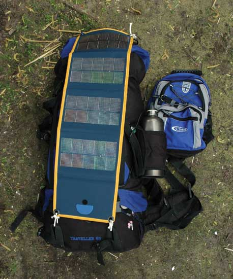 |
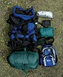 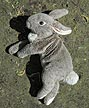 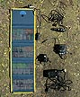 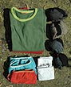 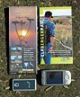 |
| 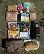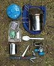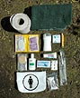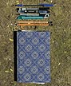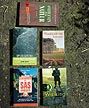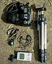 | |
|
Bagage - 18109 gram Wat neem ik mee tijdens een meerdaagse wandeling in de Veluwe? De bagage bepaalt voor een groot deel hoe mijn verblijf verloopt. Elektronische gadgets en andere hebbedingetjes dragen bij aan het wandelgenot. Het maken van keuzes, het passen en meten en de aanschaf van de laatste materialen vergroot de voorpret. Het is een kunst om de grens tussen te weinig comfort en te veel gewicht te vinden. |
|